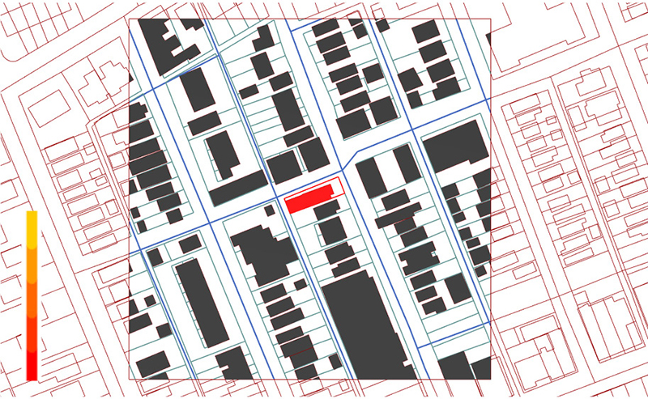

Diagrammatic image dataset for Pittsburgh (DID-PGH) is a urban morphology dataset. DID which contains the architectural relationship of the city, and experimented with the recognition and use of this dataset. With the AI models to handle DID, the computer has shown the possibility of a design system that responds to situations by recognizing and patterning complex relationships. Particularly, by not only learning the footprint based on the information of surrounding architectural contexts conditions but also generating a new footprint on an unfigured site, as learning-based system, this system showed the potential that it will be able to overcome several bottlenecks of the rule-based system. Learning-based systems can be a new paradigm in architectural design beyond the existing rule-based system such as parametric architecture.
The process of creating DID-PGH has three main steps: pre-processing, generation of diagram, and analysis of dataset’s characteristics. In the pre-processing step, there are three detailed steps: data collection, filtering data, data visualization. Data collection is the process of obtaining information about the physical elements that affect urban fabrics. Filtering data is the step of extracting only necessary data from the collected data and matching and synchronizing them to each other. Data visualization is the process of assigning a drawing style to the refined data to draw the diagram. Generation of diagram is the step of generating the diagram filtering the assigned drawing style within the intended scope. Once all these steps are done, a diagram image dataset can be generated. The dataset generated by those steps above has different characteristics from existing GIS data. This section illustrates how DID as the new form of urban data has different characteristics compared to GIS.

Preparation for drawing a diagrammatic image is to set the image range of the window. Specifying a range to be called a surrounding context with a building is to set a range of other urban elements related to this building. This range can include a broader architectural contextual relationship, or just an immediate relationship, such as footprints of neighbor buildings. As this research is a study about urban fabrics, the range should be set smaller than city or community scale and larger than adjacent buildings. To get the proper range of the window for our research goal, I calculate the average area of all building footprints (202m2) and square root it (14m). I employ this number as the average radius of the target building because of the various shapes of buildings. Especially, even if the same area, because there are many rectangular buildings, the average range of one building is 28m. Assuming that about three neighbor buildings are included on one side of the target building, half of the window range is set as 98m and one side of the window is 196m.
Drawing diagrammatic images requires the process to set the diagram drawing style. This style can be customized by the user’s intention or the purpose of the researches. In this research, after setting the window for the image range, we filled the building footprints which is inside of the window with solid color. Particularly, the target building has a color from the color gradients by its height. The color gradient can be segmented as five different colors to categorize the classes of buildings height: 1m - 12m (max. 3 stories), 12m-25m (max. 7 stories, low-rise building), 25m-75m (max. 20 stories, mid-rise building), 75m-150m (max. 35 stories, high-rise building), 150m - (super high-rise building). We only colored the target building by its height, but when other analyses are needed, all buildings within the window can be colored by their heights. Besides, I set the graphic style for all the line elements such as parcels and streets. I use a 'Custom Preview Line weights' component from the plug-in named 'Human' to express the line color and its thickness: highway as 10 px wide dark blue lines, major roads as 7px wide blue lines, minor roads as 3px wide sky-blue lines, and pedestrian paths as 1px wide light blue lines. Once assigning the diagram style is finished, geometries appear in the window according to the given style.
The diverse ways to aggregate and arrange the all images representing all buildings and their context conditions in Pittsburgh show patterns of granularity that architects have not seen on regular map (see Appendix 4 for detailed images). The goal of this aggregation is not a simple arrangement of diagrammatic images, but to discover the new understandings of the city changing the perspective on how we interpret the data using AI techniques unlike the way to understand the city so far. The analysis of the city by transforming a city into data containing visual information will provide a chance to look closely at the urban space and collectivity through individuality like these aggregated diagrammatic images. The aggregated diagrammatic images well show difference between GIS and DID-PGH in terms of approaches of the analysis method: top-down and bottom-up.
The use of GIS is popular to understand the city as a data-based object. The GIS system collects a variety of information and displays it on the map to help users understand new facts form the mapping. This way of analyzing the city is a top-down method. Particularly, when analyzing the urban space, fabric or texture with GIS, the general method is to divide the entire city into a set of patterns based on several specific urban structures. This method is effective for understanding the overall shapes of the entire city with specific themes due to huge scale of the analysis. However, in order to apply this analysis method and information to building or district design, it is necessary to change the scale. This change of the scale can result in distorted application due to arbitrary interpretation of the urban scale information.
DID is the material for a bottom-up approach to analyze the urban structures by focusing a building and its context conditions. This method will help designers minimize distortion when applying urban scale information to smaller-scale designs. Rather than collectively setting urban patterns, this method finds similarities according to the vectorized characteristics of all buildings in the city and their surroundings. Therefore, unlike a global view, it contains all the situations in which a building is laid out. With this method, when designing space within a specific site, designers can realize what kinds of spaces and characteristics it has throughout the city.